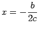

Inhalt Index DeskTop Bronstein

 Funktionen und ihre Darstellung Exponentialfunktionen und logarithmische Funktionen
Funktionen und ihre Darstellung Exponentialfunktionen und logarithmische Funktionen


kann als Verallgemeinerung der GAUSSschen Glockenkurve y=e-(ax)2 (2.58) aufgefaßt werden; sie stellt eine symmetrische Kurve zur vertikalen Geraden  dar, wobei die x-Achse nicht geschnitten wird und der Schnittpunkt D mit der y-Achse bei (0,a) liegt.
Der Verlauf der Funktion hängt von den Vorzeichen von a und c ab. Hier wird nur der Fall a > 0 betrachtet, da die Kurve zu a < 0 durch Spiegelung an der x-Achse erhalten werden kann.